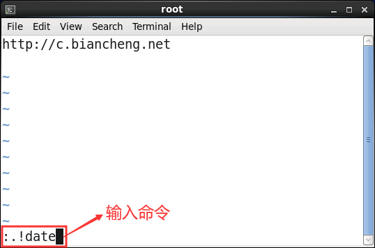
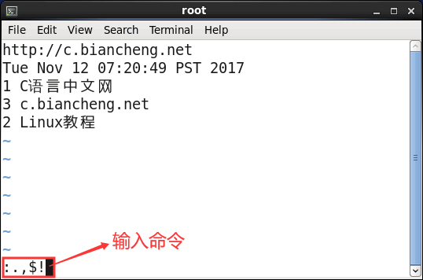
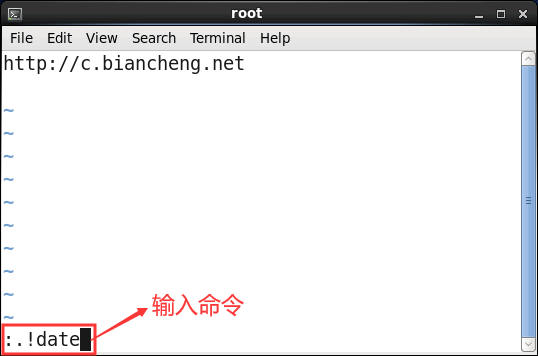
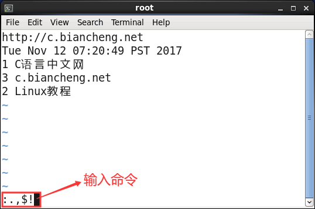

如何在Vim中执行Linux命令？
Vim 编辑器不仅提供了大量的命令来方便和加快我们的文件编辑工作，在此编辑器中，我们还可以直接使用 Linux 命令来进一步提高文件编辑的效率，这就是 Vim 编辑器的所谓过滤功能。
由于 Vim 编辑器中支持直接执行 Linux 命令，从而可以方便快捷地对文件完成以下操作：
下面，通过一个简单的例子，来演示如何在 Vim 编辑器中执行 Linux 命令。
首先，我们新建一个 demo.txt 文件，并手动输入如下内容，并将光标移动至下一行开头：

图 1 向文件中输入命令的执行结果
注意，窗口左下角的
确认光标位置无误后，按 Enter（回车）键，这时会发现系统当前的日期和时间写到了 demo.txt 文件中第 2 行的位置：

图 2 Vim命令模式下按 !} 的提示信息
除此之外，表 3 罗列出了常用的几种 Vim 和 Linux 命令搭配使用的方式
由于 Vim 编辑器中支持直接执行 Linux 命令，从而可以方便快捷地对文件完成以下操作：
- 将一个命令的输出结果存入正在编辑的文件；
- 将正在编辑的文件中的一些数据作为某个指定 Linux 命令的输入。
下面，通过一个简单的例子，来演示如何在 Vim 编辑器中执行 Linux 命令。
首先，我们新建一个 demo.txt 文件，并手动输入如下内容，并将光标移动至下一行开头：
http://c.biancheng.net
在此基础上，按 Esc 令 Vim 返回到命令模式，再按下!!，这时在窗口的左下角会出现:.!的提示信息，这就表明我们可以输入 Linux 命令了。例如，我们输入 date 命令，如图 1 所示：

图 1 向文件中输入命令的执行结果
注意，窗口左下角的
:.!表示操作文本的范围，其中 . 表示从光标所在行开始，! 表示后续会执行 Linux 命令，整体表示命令的执行结果将插入到光标所在行的位置，因此，如果光标所在位置处有数据，就会被命令的执行结果直接覆盖掉。确认光标位置无误后，按 Enter（回车）键，这时会发现系统当前的日期和时间写到了 demo.txt 文件中第 2 行的位置：
http://c.biancheng.net
Tue Nov 12 07:20:49 PST 2017
http://c.biancheng.net
Tue Nov 12 07:20:49 PST 2017
1 C语言中文网
3 c.biancheng.net
2 Linux教程
!}组合键，你会看到窗口的左下角出现:.,$!的提示信息，如图 2 所示。

图 2 Vim命令模式下按 !} 的提示信息
在此基础上，我们使用 sort 命令对选中文本按照第 1 列进行降序排序，执行命令如下：其中 . 表示光标所在的当前行，$ 表示文件最后一行，因此和之前不同，这次选取的是文件中第 3 行及之后的所有内容。
:.,$!sort -nr -k1
按 Enter（回车）键，可以看到，demo.txt 文件中的内容变成：有关 sort 命令的用法，由于不是本节重点，这里不再做过多讲解。
http://c.biancheng.net
Tue Nov 12 07:20:49 PST 2017
3 c.biancheng.net
2 Linux教程
1 C语言中文网
除此之外，表 3 罗列出了常用的几种 Vim 和 Linux 命令搭配使用的方式
| 格式 | 功能 |
|---|---|
| :!命令 | 直接运行一个 Linux 命令，运行完毕之后，即可返回到 Vim 中。 |
| :w!命令 | 将 Vim 中所有的文本内容作为指定命令的输入。但命令的执行结果不会写入到当前文件中。 |
| :r!命令 | 将命令执行的结果写入到当前 Vim 中，例如 :!ls 表示将 ls 的执行结果输入到 Vim 中。 |
| :nr!命令 | 其中 n 为数字，表示将命令的执行结果写入到 Vim 第 n 行的位置。例如，:3r!date 表示将 date 命令的执行结果写入到第 3 行文本处。 |
| :n,m!命令 | 其中 n 表示起始行号，m为结束行号，功能是将 Vim 中指定的部分文本作为某个命令的输入，同时将命令的输出也插入到当前指定的位置。 |
| :n,m w!命令 | 其中 n 表示起始行号，m为结束行号，其功能是 Vim 中指定的部分文本作为某个命令的输入，但命令的执行结果不会写入到文件中。 |
| !!date | 向 Vim 中插入当前时间。 |
关注微信公众号「站长严长生」，在手机上阅读所有教程，随时随地都能学习。本公众号由C语言中文网站长运营，每日更新，坚持原创，敢说真话，凡事有态度。

微信扫描二维码关注公众号